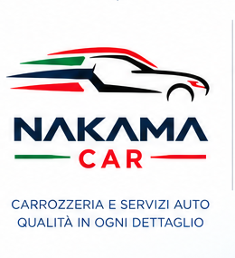

NAKAMA
CAR
EL TALLER, EN MOVIMIENTO
DEMO INTERACTIVA
Sin órdenes reales
Cargando taller 3D…
Mapa de la zona
General
Interior
Aérea
Frontal
Techos del taller
Corte interior
Seguir vehículo
+
−
Arrastra para girar · clic derecho para desplazar · rueda para acercar
Listo
Preventivo
Diagnóstico
Por ingresar
Espera de repuesto